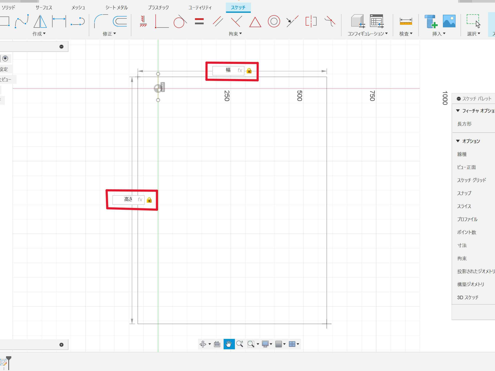
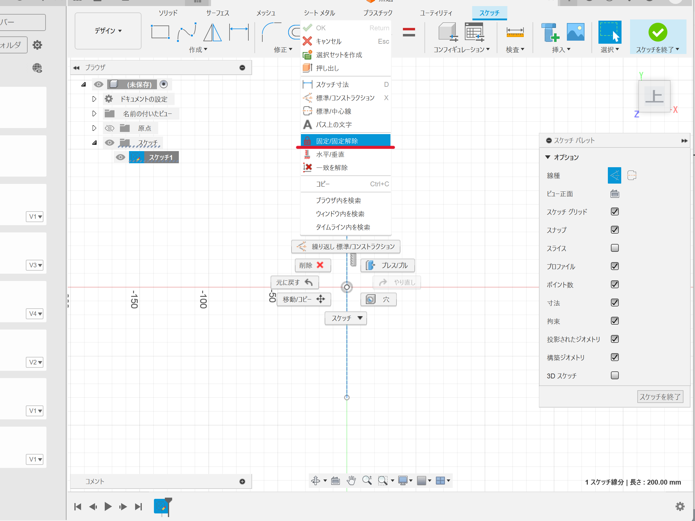
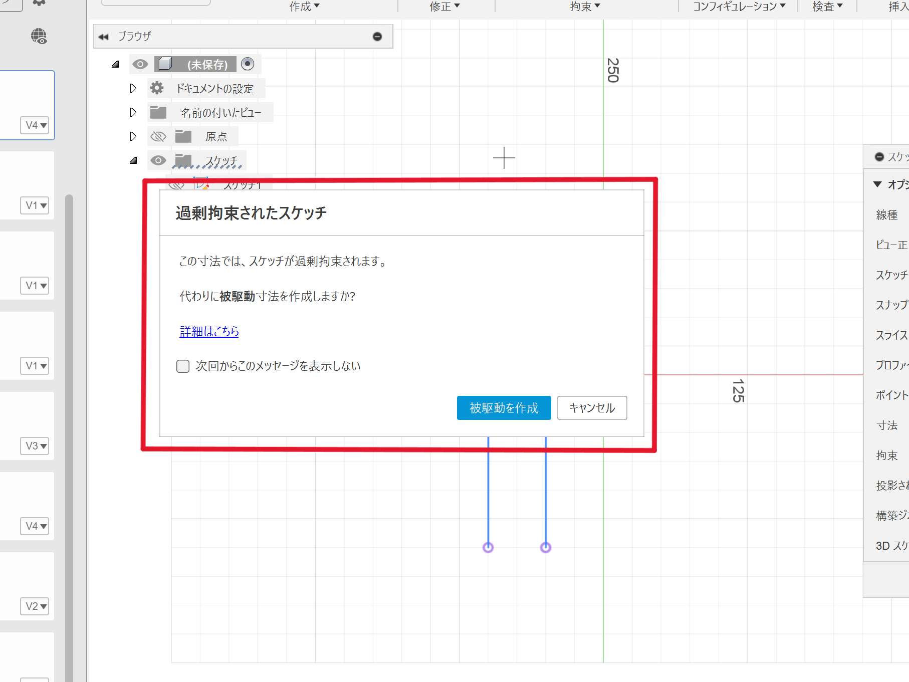
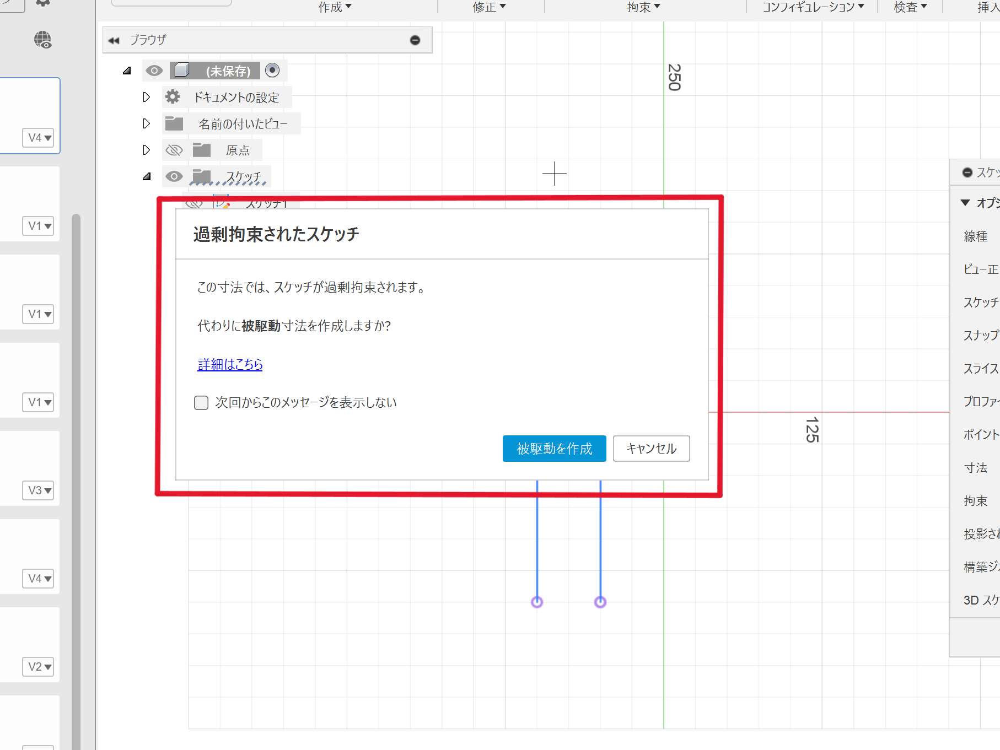
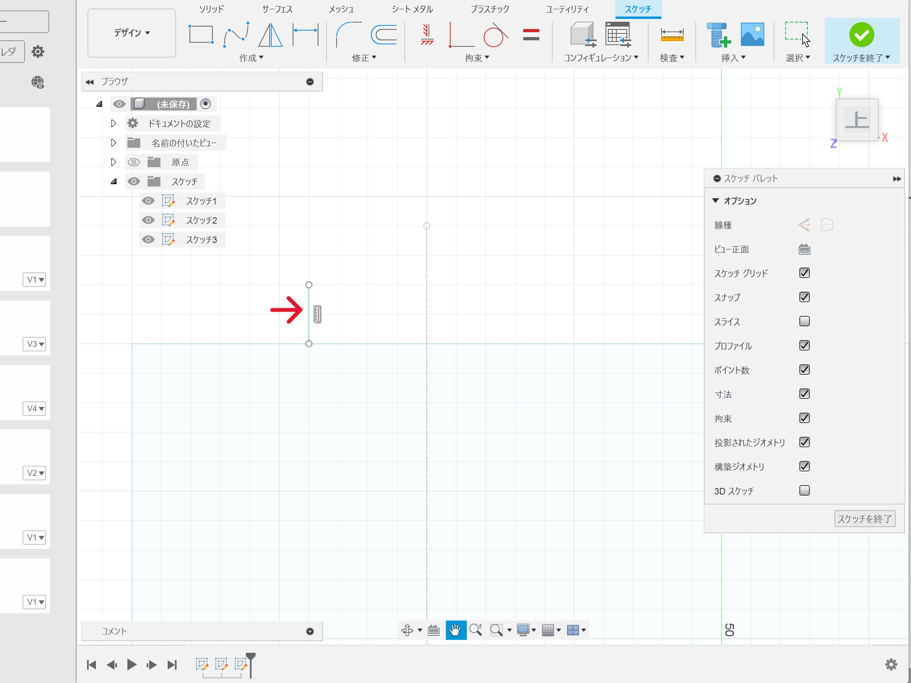

設計
背もたれとなる上部分のパーツをFusion360で設計していきます。
＜手書きイメージ＞
背もたれパーツ設計の流れ
１．パラメータを作成
このパラメータという機能は、複数人で設計を行う場合や、高さや幅など何度も使用する決まった寸法がある場合に非常に便利な機能です。
パラメータは、修正タブの「パラメータを変更」から設定することができます。

右上の＋マークからパラメータを追加します。


POINT
・パラメータ名はわかりやすく
パラメータは使用する際にパラメータ名を入力するので、できるだけわかりやすく間違えないような名前にするのがポイント。
特に、同じプロジェクトを複数人で作業する場合には、パラメータがすべて共有されるので注意が必要です。
・式で表せる数値はなるべく式にする
スリットの高さや位置など、高さや幅を基準に設定するものは、直接数値を入れるのではなく、高さや幅を使った式を入力するのがポイント。
入力ミスを防ぐのはもちろん、後から高さや幅を変更したときに、自動で他のパラメータも変更させることができます。
パラメータは使用する際にパラメータ名を入力するので、できるだけわかりやすく間違えないような名前にするのがポイント。
特に、同じプロジェクトを複数人で作業する場合には、パラメータがすべて共有されるので注意が必要です。
・式で表せる数値はなるべく式にする
スリットの高さや位置など、高さや幅を基準に設定するものは、直接数値を入れるのではなく、高さや幅を使った式を入力するのがポイント。
入力ミスを防ぐのはもちろん、後から高さや幅を変更したときに、自動で他のパラメータも変更させることができます。
↓のようにスケッチで図形を描く際に、パラメータ名を入力することで設定した式が自動で反映されます。

２．補助線を引く
設計をする際に、図の中心や端に補助線を引くことでスケッチがしやすくなり、ミスを減らすことができます。
特に、対称的な図を描くときや、位置やサイズに正確性が求められるものを作るときには、補助線が重要な役割を果たします。
まず、スケッチを開始→線分を選択し、適当に線を引きます。
（線を引いたらスケッチを終了せず、右クリック→OKを押す）
引いた線を選択した上で、右クリック→「標準/コンストラクション」を選択します。

先ほど引いた線が 実線から点線 に変わりました。
次に、作業中線が動かないように固定します。（線を選択して右クリック）

３．スケッチ寸法
補助線を複数本引くときや、図形を描くときなどに、その位置やサイズを調整するため使うのがスケッチ寸法です。
作成タブにある「スケッチ寸法」を選択したら、位置を調整したい線を選び、適当な値（パラメータなど）を入力します。
POINT
このとき、二つの線とスケッチ寸法は同じスケッチ内で作業をしないと画像のようなエラーが出てしまいます。


４．ミラー
補助線などを中心に、左右対称な図を描きたいときに使うのがミラーという機能です。
まず、左右対称にしたい線の片方を描きます。

次に作成タブから「ミラー」を選択します。
オブジェクトに先ほど引いた線を選択し、ミラー中心線に補助線を選択します。
OKを押すと、補助線を中心とした左右対称の線（赤矢印）が引かれます。
（２本の線を選択し、スケッチ寸法を使えば幅も調整できます。）
ミラーで描いた線の間を繋げば、突部分の完成！
５．角に穴をつける
Shop Botは円柱状の刃なので、加工されるときに角が丸くなってしまいます。
このままだとスリットやはめ込み部分が上手く嚙み合わなくなってしまうので、
↓のように角の部分に小さな穴をつける作業を行います。
６．スケッチ終了
スリット、突、角の穴を描きすべてのスケッチが終了しました！
７．押し出し
スケッチが終了したら、次は押し出しの工程に入ります。
作成タブの「押し出し」を選択し、立体にしたい部分を選択します。
押し出したい長さ（今回は板厚）を入力したら立体になります。
これで背もたれパーツの完成です！
後は、このパーツをCAD上で量産し、スリット部分などがしっかり嚙み合うのかを確認して、出力作業を行っていきます。
アセンブル
新規デザインを開き、背もたれパーツのファイルを右クリック→現在のデザインに挿入を押します。
一つ目に挿入したパーツの位置を調整したら、二つ目のパーツを挿入し、組み合わせるときの角度になるよう合わせます。
配置ができたら、アセンブリのジョイントを選択します。
スナップ点を選択する画面になったら、コンポーネント１，２でそれぞれくっつけたい場所を選択します。
POINT
二か所とも選択が終わったら自動的にパーツが動きます。
このとき、コンポーネントは、最初に選択した方のパーツが二個目に合わせて移動するので、
動かしたくない方のパーツをコンポーネント２に選択しましょう。
このとき、コンポーネントは、最初に選択した方のパーツが二個目に合わせて移動するので、
動かしたくない方のパーツをコンポーネント２に選択しましょう。
アセンブルが完了しました。
このアセンブル作業をすることで作ったパーツがしっかり組み合わさるのかをCAD上で確認することができます。
また、検査タブのコンポーネントのカラーを表示で色を付けることもできます。
別のファイルで作ったパーツをまとめてアセンブル作業をする際、それぞれ色を変えてアセンブルすることで確認がしやすくなります。